ffmpeg使用教程
安装 ffmpeg
windows 安装 ffmpeg
查看设备列表
Windows查看设备列表
|
|
查看设备列表结果
像我的主机上只有audio相关设备，没有video相关设备
|
|
查看视频录制的可选参数
|
|
查看视频录制的可选参数结果
|
|
查看音频录制的可选参数
|
|
查看音频录制的可选参数结果
|
|
Linux查看设备列表
|
|
查看设备列表结果
|
|
屏幕录制
Windows下操作
只录制画面，没有声音
|
|
播放视频
|
|
只录制声音，没有画面
|
|
播放音频
|
|
同时录制声音和画面-1
|
|
以下是录制命令的说明：
-f gdigrab 使用 FFmpeg 内置的 Windows 屏幕录制命令gdigrab，录制对象可为全屏、指定范围和指定程序。MacOS 录屏方法为AVFoundation，Linux 录屏方法为x11grab。
同时录制声音和画面-2
|
|
以下是录制命令的说明：
"OBS Virtual Camera" 是电脑安装了OBS，然后将OBS的虚拟摄像机打开并设置输出类型为"来源"，输出选择为"显示器采集"，打开了虚拟摄像机后可以再次使用命令查看设备列表可以看到多出一个OBS的虚拟摄像机
播放视频
|
|
多参数录屏示例
|
|
命令详解
-f 指定采集数据方式，一般为dshow 或 gdigrab。gdigrab为系统自带，只能录屏幕，没声音；dshow需装directX，优点是可以指定多个输入，比如下载安装screen capture recorder后，可将其作为dshow模式下的视频输入，可将virtual-audio-capturer作为dshow模式下的音频输入，实现录屏的同时录音。 -i 指定输入，desktop表示gdigrab采集模式输入全部桌面。dshow模式下自己指定，如：-i video="screen-capture-recorder" -i audio="virtual-audio-capturer" -t 表示录屏时间，缺省则没有录屏时间限制，会一直录，录到手动停止或强制关闭 -framerate 表示帧率。对屏幕录制来说，一般15帧就够了，太大的话会很占资源，cpu占用率、内存、存储空间占用等都会很高。
- s 表示分辨率
-b:v 表示码率，如：-b:v 3M。大一点清楚，但是占资源，自己权衡吧。 -pixel_format 表示像素格式，如yuv420p等，注意选择不同的像素格式会影响资源占用率和视频质量，自己研究吧。 -vcodec 表示编码方式。libx264表示软编码，编码器的库为x264。你可以选择其他的，不同的编码方式也会影响资源占用率和视频质量，自己研究吧。此外可以用硬件加速，硬编解码有3种常见的方式，例如：-vcodec h264_qsv，即使用集显加速；例如： -vcodec h264_nvenc，即使用N卡加速；例如： -vcodec h264_amf，即使用A卡加速。开启硬件加速的情况下可大大降低CPU的占用率 -y 表示覆盖同名文件 test.flv为输出文件名，格式虽然mp4较为常见，但我建议用flv格式，因为如果中间有录制损坏，mp4整个就播放不了了，但flv能。
播放视频
|
|
ffmpeg对桌面或指定窗口录制视频gdigrab
ffmpeg录屏命令gdigrab
基于Win32屏幕捕捉设备，支持对显示器指定区域进行录屏。
可选2种捕捉方式：
| -i | desktop |
|---|---|
| -i | title=window_title |
- 方式1 捕捉整个桌面或者桌面的某个区域。
- 方式2 捕捉指定窗口，由窗口标题栏指定窗口。
实际上，由于窗口标题可能重名，导致录屏窗口不对。
|
|
|
|
|
|
录制时长为3秒
|
|
|
|
|
|
|
|
|
|
|
|
|
|
|
|
- framerate 录屏帧率。默认值ntsc, 一般是30000/1001.
除了ffmpeg设置默认参数之外，gdigrab可设置下列参数项：
- show_region 录屏时是否在屏幕上显示边界框。用于检查录屏区域，防止区域错误。 1显示，0不显示。
- draw_mouse 是否包含鼠标。0=不包含，1=包含。默认值1，视频含有鼠标。
- video_size 视频尺寸，默认整个桌面或整个窗口。 自定义尺寸，如1280x720。或者，下面的列表之一。
- offset_x 和video_size一起使用，指定左上角位置。 原点为桌面或指定窗口的左上角。
- offset_y 同上。
不使用video_size/offset_x/offset_y，则对整个桌面或程序窗口录屏，使用则只对桌面或窗口的部分区域进行录屏。
video_size可选视频尺寸
| ntsc | 720x480 |
|---|---|
| pal | 720x576 |
| qntsc | 352x240 |
| qpal | 352x288 |
| sntsc | 640x480 |
| spal | 768x576 |
| film | 352x240 |
| ntsc-film | 352x240 |
| sqcif | 128x96 |
| qcif | 176x144 |
| cif | 352x288 |
| 4cif | 704x576 |
| 16cif | 1408x1152 |
| qqvga | 160x120 |
| qvga | 320x240 |
| vga | 640x480 |
| svga | 800x600 |
| xga | 1024x768 |
| uxga | 1600x1200 |
| qxga | 2048x1536 |
| sxga | 1280x1024 |
| qsxga | 2560x2048 |
| hsxga | 5120x4096 |
| wvga | 852x480 |
| wxga | 1366x768 |
| wsxga | 1600x1024 |
| wuxga | 1920x1200 |
| woxga | 2560x1600 |
| wqsxga | 3200x2048 |
| wquxga | 3840x2400 |
| whsxga | 6400x4096 |
| whuxga | 7680x4800 |
| cga | 320x200 |
| ega | 640x350 |
| hd480 | 852x480 |
| hd720 | 1280x720 |
| hd1080 | 1920x1080 |
| 2k | 2048x1080 |
| 2kflat | 1998x1080 |
| 2kscope | 2048x858 |
| 4k | 4096x2160 |
| 4kflat | 3996x2160 |
| 4kscope | 4096x1716 |
| nhd | 640x360 |
| hqvga | 240x160 |
| wqvga | 400x240 |
| fwqvga | 432x240 |
| hvga | 480x320 |
| qhd | 960x540 |
| 2kdci | 2048x1080 |
| 4kdci | 4096x2160 |
| uhd2160 | 3840x2160 |
| uhd4320 | 7680x4320 |
Linux下操作
录制全屏视频
|
|
参数详解
这条 ffmpeg 命令用于从 X11 屏幕录制视频，并将结果保存为 output.mp4。以下是对每个参数的详细解释：
- ffmpeg: 调用 FFmpeg 工具进行视频和音频处理。
- -f x11grab: 指定输入格式为 X11 屏幕捕捉（x11grab）。这表示要录制 X11 显示器上的屏幕内容。
- -r 25: 设置视频的帧率为 25 帧每秒（fps）。这决定了录制视频的流畅度。
-
-s $(xwininfo -root | grep -Eo "[0-9]{3,5}x[0-9]{3,5}"): 设置输出视频的分辨率为当前屏幕的分辨率。
- xwininfo -root: 获取根窗口（即整个屏幕）的信息。
- grep -Eo "[0-9]{3,5}x[0-9]{3,5}": 使用正则表达式从 xwininfo 的输出中提取屏幕分辨率，格式为 宽度x高度。[0-9]{3,5} 匹配 3 到 5 位的数字，x 是分隔符，后面的 [0-9]{3,5} 匹配高度部分。
- -i :0.0: 指定 X11 屏幕的显示和显示编号为 :0.0。通常表示第一个显示器的第一个屏幕。
- -t 3: 设置录制时长为 3 秒。-t 指定录制的时间长度。
- -vcodec libx264: 指定视频编码器为 libx264，即使用 H.264 编码。H.264 是一种高效的视频编码格式。
- -preset ultrafast: 设置编码预设为 ultrafast，优先考虑编码速度，而非压缩效率。这将生成较大的文件，但编码速度最快。
- -y: 自动确认覆盖输出文件。如果 output.mp4 已经存在，FFmpeg 会自动覆盖它，而不会提示用户确认。
- output.mp4: 指定输出文件名为 output.mp4。mp4 是一种广泛使用的视频文件格式，能够容纳视频和音频流。
总的来说，这条命令从 X11 屏幕录制 3 秒钟的视频，使用 H.264 编码，保存为 output.mp4。
录制指定区域视频
|
|
参数详解
这条 ffmpeg 命令用于从 X11 屏幕录制指定区域的视频，并将结果保存为 output.mp4。下面是对每个参数的解释：
- ffmpeg: 调用 FFmpeg 工具进行视频处理。
- -f x11grab: 指定输入格式为 X11 屏幕捕捉，表示要录制 X11 显示器上的屏幕内容。
- -r 25: 设置视频的帧率为 25 帧每秒（fps），决定了录制视频的流畅度。
- -s 800x600: 设置录制视频的分辨率为 800x600 像素。这里是指定的区域大小。
- -i :0.0+100,200: 指定录制的输入源为 X11 屏幕 :0.0，并且设置录制区域的起始位置为屏幕上的 (100, 200) 像素点。这意味着视频录制将从屏幕的 (100, 200) 位置开始，覆盖 800x600 像素的区域。
- -vcodec libx264: 指定视频编码器为 libx264，即使用 H.264 编码。这种编码格式在压缩效率和视频质量之间提供了很好的平衡。
- output.mp4: 指定输出文件名为 output.mp4。这是最终保存录制内容的视频文件名。
总的来说，这条命令从 X11 屏幕的 (100, 200) 位置开始录制一个 800x600 像素的区域，录制的帧率为 25 fps，使用 H.264 编码，保存为 `output.mp4`。
指定录屏时间长度为30秒
|
|
参数详解
这条 `ffmpeg` 命令用于从 X11 屏幕录制指定时长的视频，并将结果保存为 `output.mp4`。下面是对每个参数的详细解释：
- ffmpeg: 调用 FFmpeg 工具来处理视频和音频。
- -f x11grab: 指定输入格式为 X11 屏幕捕捉，表示要录制 X11 显示器上的屏幕内容。
- -r 25: 设置视频的帧率为 25 帧每秒（fps），决定了录制视频的流畅度。
-
-s $(xwininfo -root | grep -Eo "[0-9]{3,5}x[0-9]{3,5}"): 设置录制视频的分辨率为当前屏幕的分辨率。
- xwininfo -root: 获取根窗口（即整个屏幕）的信息。
- grep -Eo "[0-9]{3,5}x[0-9]{3,5}": 从 xwininfo 输出中提取屏幕的分辨率，格式为 宽度x高度。正则表达式 [0-9]{3,5} 匹配 3 到 5 位的数字，x 作为分隔符，后面 [0-9]{3,5} 匹配高度部分。这样做可以确保 FFmpeg 使用当前屏幕的完整分辨率进行录制。
- -i :0.0: 指定 X11 屏幕的显示和显示编号为 :0.0。通常表示第一个显示器的第一个屏幕。
- -t 30: 设置录制时长为 30 秒。-t 用来指定录制的时间长度。
- -preset ultrafast: 设置视频编码的预设为 ultrafast。这会使编码过程尽可能快，但会生成较大的文件，因为编码压缩率较低。
- -y: 自动确认覆盖输出文件。如果 output.mp4 已经存在，FFmpeg 会自动覆盖它，而不需要用户确认。
- output.mp4: 指定输出文件名为 output.mp4。这是录制的视频将被保存的文件名。
总的来说，这条命令从 X11 屏幕录制 30 秒钟的视频，使用当前屏幕的完整分辨率，帧率为 25 fps，使用 H.264 编码，并将结果保存为 `output.mp4`。编码设置为 `ultrafast`，优先考虑编码速度。
使用alsa录制系统音频
|
|
参数详解
这条 `ffmpeg` 命令用于同时录制音频和视频，并将结果保存为 `output.mkv`。以下是对每个参数的详细解释：
- ffmpeg: 调用 FFmpeg 工具来处理视频和音频。
- -f alsa -i default: 指定音频输入格式为 ALSA（Advanced Linux Sound Architecture），并选择默认音频设备作为输入。-f alsa 指定了音频输入格式为 ALSA，-i default 表示使用系统默认的音频输入设备。
-
-f x11grab -r 25 -s $(xdpyinfo | grep 'dimensions:' | awk '{print $2;}') -i :0.0: 指定视频输入格式为 X11 屏幕捕捉。
- -f x11grab: 指定视频输入格式为 X11 屏幕捕捉。
- -r 25: 设置视频的帧率为 25 帧每秒（fps）。
- -s $(xdpyinfo | grep 'dimensions:' | awk '{print $2;}'): 设置录制视频的分辨率。xdpyinfo 是一个 X11 工具，用于获取 X11 显示的相关信息。grep 'dimensions:' 提取包含屏幕分辨率的行，awk '{print $2;}' 从这一行中提取分辨率信息（如 1920x1080）。
- -i :0.0: 指定 X11 屏幕的显示和显示编号为 :0.0，通常表示第一个显示器的第一个屏幕。
- -c:v libx264: 指定视频编码器为 libx264，这是用于 H.264 视频编码的 FFmpeg 编码器。
- -preset ultrafast: 设置视频编码的预设为 ultrafast，使编码过程尽可能快，但会生成较大的文件，因为编码压缩率较低。
- -c:a aac: 指定音频编码器为 aac，用于音频压缩和编码，常用于高效的音频压缩。
- -tune fastdecode: 指定编码器的调整参数为 fastdecode，优化编码设置以加快解码速度。这通常有助于提高播放设备或软件的解码效率。
- output.mkv: 指定输出文件名为 output.mkv。这是录制的音视频将被保存的文件名，使用 MKV 格式。
总结来说，这条命令将从默认的音频设备和 X11 屏幕录制视频和音频。视频将以 25 fps 录制，使用 `libx264` 编码器和 `ultrafast` 预设，音频将使用 `aac` 编码器，并且优化了解码速度。录制的结果将保存为 `output.mkv` 文件。
这些命令可以根据需要进行修改，例如更改输出文件名或调整录屏分辨率和帧速率。
参考链接
编辑字幕
硬字幕和软字幕的简介
硬字幕
将字幕渲染到视频的纹理上，然后将其编码成独立于视频格式的一个完整的视频。硬字幕不能更改或删除，因为它们与视频（通道）是一个整体。
软字幕
在播放视频时实时渲染和读取。软字幕可以在播放过程中随时添加或删除。软字幕比硬字幕更加灵活，因为它们可以随时进行修改，但它们也需要高性能的播放器支持。
字幕单独生成一个字幕通道，与视频、音频一样，如以下Stream #0:2：
|
|
SRT和ASS字幕格式的简介
SRT（SubRip Subtitle）
是一种简单的字幕格式，主要由时间戳和文本组成。它通常用于简单的字幕文件，如电影聚会之类。SRT字幕格式的参数如下：
- 标题的计数器/索引
- START和END：字幕开始和字幕结束的时间戳，格式为 “小时：分钟：毫秒”。
- TEXT：在此时间戳范围内显示的字幕文本
- 一行空白表示一个结束
|
|
ASS（Advanced SubStation Alpha）
是一个高级的字幕格式，它可以支持更多的样式和控制，比如，更改颜色、字体和大小，还可以通过几何变换来控制字幕的位置。ASS字幕格式包含以下参数：
样式
|
|
对齐
|
|
触发器
|
|
动画
|
|
特殊效果
|
|
合的ASS字幕案例
|
|
生成字幕的命令
SRT硬字幕命令
|
|
命令参数详解
-vf 是 ffmpeg 的视频滤镜选项，subtitles=subtitle.srt 表示使用字幕滤镜将 subtitle.srt 文件中的字幕嵌入到视频中。这个选项会将 subtitle.srt 文件中的字幕渲染到视频流上。
ASS硬字幕命令
|
|
SRT和ASS软字幕命令
|
|
SRT可以转ASS命令
|
|
多通道(软)字幕命令
准备字幕文件：假设有中文字幕文件为ch.srt，英文字幕文件为en.srt。
|
|
|
|
命令
|
|
注意：ass格式同样的操作
|
|
这个 ffmpeg 命令的作用是将 input.mp4 视频与两个字幕文件 ch.srt（中文）和 en.srt（英文）合并成一个包含两种语言字幕的输出视频文件 output_chi_eng.mp4。以下是各个参数的详细解释：
- ffmpeg: 调用 FFmpeg 工具。
- -i input.mp4: 指定第一个输入文件，input.mp4 是要处理的视频文件。
- -i ch.srt: 指定第二个输入文件，ch.srt 是中文字幕文件。
- -i en.srt: 指定第三个输入文件，en.srt 是英文字幕文件。
- -map 0: 包含第一个输入文件（input.mp4）的所有流（视频、音频、字幕）。
- -map 1: 包含第二个输入文件（ch.srt）的所有流（中文字幕）。
- -map 2: 包含第三个输入文件（en.srt）的所有流（英文字幕）。
- -c copy: 对视频和音频流使用直接复制方式，不进行重新编码。
- -c:s mov_text: 对字幕流使用 mov_text 编解码器，这种编码适用于 MP4 容器。
- -metadata:s:s:0 language=chi: 为第一个字幕流（中文字幕）设置语言元数据为 chi。
- -metadata:s:s:1 language=eng: 为第二个字幕流（英文字幕）设置语言元数据为 eng。
- output_chi_eng.mp4: 指定输出文件名，output_chi_eng.mp4 是最终生成的包含中英文字幕的视频文件。
多通道(软)字幕，中英字幕实现
准备字幕文件：假设有中英文字幕文件为ch_en.srt，英文字幕文件为en.srt。
|
|
|
|
|
|
|
|
ffmpeg给视频添加字幕(软字幕和硬字幕)
软字幕(外挂字幕)
先获取视频元数据
|
|
|
|
假设有一个视频轨(#0:0), 一个音频轨(#0:1), 两个字幕轨(#0:2和#0:3)，现在我要添加第三个字幕, 可以如下操作
|
|
- 第一个输入流(视频.mp4)对应map 0, 第二个输入流(字幕.srt)对应map 1
- metadata:s:s:2 指向第三个字幕流元数据
- c:v 视频编解码方式
- c:a 音频编解码方式
- c:s 字幕编解码方式
- c:s:2 mov_text: 对字幕流使用 mov_text 编解码器，这种编码适用于 MP4 容器。
视频已经有video和audio，接下来要做是添加Subtitle
|
|
- -i input.mp4：-i 选项指定输入文件。这里 input.mp4 是你要处理的视频文件。
- -i input.srt：第二个 -i 选项指定字幕文件 input.srt。ffmpeg 会将这个字幕文件合并到视频中。
- -c:v copy：-c:v 用于指定视频编解码器。copy 表示直接拷贝视频流，不进行任何编码或重新压缩，从而保留原始视频质量。
- -c:a copy：-c:a 用于指定音频编解码器。copy 表示直接拷贝音频流，不进行重新编码，保持原始音频质量。
- -c:s mov_text：-c:s 用于指定字幕编解码器。mov_text 是将字幕编码为适用于 MP4 文件的文本轨道格式。这种格式允许播放器选择显示或隐藏字幕。
- -y：-y 选项表示在输出文件 output.mp4 已存在时自动覆盖该文件，而不会询问确认。这对于脚本或批处理操作非常有用。
- output.mp4：这是输出文件的名称。合并后的文件将保存为 output.mp4。
硬字幕(将字幕烧录到视频上)
将外部字幕烧录到视频中(例如第二个字幕轨)
|
|
使用mkv容器中的某一个字幕轨烧录到视频上
|
|
:si=1 代表指定选择第 1 个字幕轨道，字幕轨道从 0 开始算起，因此 si=1 对应第 2 个字幕轨道。si 是 subtitles 过滤器的一个选项，用于指定字幕流的索引。这里的 si 代表 "subtitle index"，即字幕流的索引。它必须用 si 而不是 s 是因为 s 是用来指定其它过滤器选项的缩写，例如 scale 或 setpts，而 si 特指字幕流的索引选择。
使用 FFmpeg 将 MKV 内封字幕压制为内嵌硬字幕
|
|
命令参数详解
-i output_chi_eng_eng.mp4 为你的输入视频文件
-vf "subtitles=output_chi_eng_eng.mp4:si=0" 代表了要选用的滤镜，请注意，这里 -vf 后面的参数是双引号之间的内容
subtitles=output_chi_eng_eng.mp4 这里是字幕的来源，可以填写 mp4 文件
:si=0 代表指定选择第 0 个字幕轨道。实际上此参数可以不加，FFmepg 将选择默认的字幕轨道。关于字幕轨道的编号可以通过播放器或 mediainfo 来查看，在 ffmpeg 中。si 是 subtitles 过滤器的一个选项，用于指定字幕流的索引。这里的 si 代表 "subtitle index"，即字幕流的索引。它必须用 si 而不是 s 是因为 s 是用来指定其它过滤器选项的缩写，例如 scale 或 setpts，而 si 特指字幕流的索引选择。
-crf:18 这里简单指定了压制的质量，18 已经是画质较佳的选项。一般动画压制的范围在 16-23，可查找其他教程
-o result.mp4 这里指定了输出文件名，mp4 的后缀将会自动将视频压制为 H.264 / AVC 编码。若需要使用其他封装格式请手动指定编码器为 libx264
ffmpeg将带字幕轨道的视频分离成无字幕视频，同时提取字幕文件及替换视频音轨
查看视频信息
命令
|
|
|
|
可以看到第一个轨道是视频，第二个轨道是音频，第三个轨道是字幕
|
|
|
|
或
|
|
- -i: 输入文件
- -map 0:0: 第1个输入文件的第一个流，也就是主要的视频流。
- -map 0:1: 第1个输入文件的第二个流，是视频的声音。
- -vcodec copy: 拷贝选择的视频流。
- -acodec copy: 拷贝选择的声音流。
|
|
或
|
|
- -i 1.mp4 指定输入的视频文件名称和路径
- -c:a mp3 指定输出的音频编码采用mp3编码器
- -map 0:a:0 指定输入输出的映射
- targetAudio.mp3 指定输出的音频文件名称和路径
|
|
- -i sourceVideo.mp4 指定输入的视频文件名称和路径
- -i sourceAudio.flac 指定输入的音频文件名称和路径，这里是一个无损格式的flac音频文件
- -c:v copy 指定输出的视频编码，copy指直接拷贝源文件的内容，不就行二次编码
- -c:a alac 指定输出的音频编码采用alac编码器
- -map 0:v:0 指定第一个输入映射到输出的视频
- -map 1:a:0 指定第二个输入映射到输出的音频
- targetVideo.mp4 指定输出的视频文件名称和路径
ffmpeg给视频添加文字
|
|
上面简单命令的相关参数
- 输入文件 1.mp4
- fontcolor 文字颜色 为黑色red
- fontsize 文字大小 为50
- text 文本内容 “Hello Word”
- 文本所处的位置 x=0,y=100
- 输出文件 5.mp4
相关命令参数
|
|
前5秒加文字
|
|
5秒后加文字
|
|
第2秒到第5加文字
|
|
参数详解
between(t\,start\,end)：这个条件判断 t 是否在 start 和 end 之间。例如，between(t\,2\,5) 会在视频播放时间从第 10 秒到第 15 秒之间为 true，即在这段时间内显示文本。
每隔3秒周期显示1秒文字
|
|
间隔1秒依次显示hello和world
|
|
文字从左向右移动 每帧移动50个像素
|
|
参数解释
x=50+50*t：文本的水平位置随着时间变化。50+50*t 意味着文本的水平位置会随着视频播放时间 t 增加，每秒移动 50 像素。
从下往上移动，每次移动100像素
|
|
打印real time
|
|
将每帧的时间戳以 hh:mm:ss 格式叠加到视频上
|
|
参考链接
水印的添加与去除
ffmpeg添加水印
基本命令
ffmpeg添加水印主要通过overlay滤镜实现。以下是一个基本示例，展示了如何在视频中添加静态水印：
|
|
在这个命令中，-i input.mp4指定了输入视频文件，-i logo.png指定了水印图片文件，overlay=10:10表示将水印放置在视频的左上角（距离左边和上边各10像素的位置），output.mp4是输出视频文件。
自定义水印位置
|
|
其中，main_w和main_h分别代表主视频的宽度和高度，overlay_w和overlay_h分别代表水印的宽度和高度。通过计算，可以将水印放置在指定位置。
透明水印
如果水印图片包含透明通道（如PNG图片），则可以直接使用ffmpeg添加透明水印。不需要额外的设置，ffmpeg会自动处理透明通道。
fmpeg去除水印
delogo是ffmpeg中用于去除视频中固定位置标志或水印的滤镜。基本语法如下：
|
|
其中，x和y是水印左上角的坐标，w和h是水印的宽度和高度，band是可选的边缘模糊宽度（默认值为4），show是可选的，如果设置为1，将显示一个矩形表示删除的区域（默认值为0）。
示例
|
|
遮盖水印
如果delogo滤镜的效果不理想，可以尝试使用drawbox滤镜来遮盖水印。基本语法如下：
|
|
其中，x、y、w、h分别代表矩形的位置和大小，color是矩形的颜色（可以是颜色名称或十六进制代码），t是矩形的厚度（t=fill表示填充整个区域）。
示例
|
|
参考链接
如何使用 ffmpeg 剪切和裁剪视频
如何使用ffmpeg剪切视频
使用 ffmpeg 剪切视频是一项非常简单、快速且资源消耗低的任务。您只需要定义开始或结束时间，或两者（如果需要）和输出文件。
下面的命令使用 ffmpeg 从标志 -ss 指定的 00:00:05 处开始剪切视频；这是定义新视频起点的标志，以防您想剪切开头的一部分。如果您只想剪切视频末尾的一部分，则不需要使用此标志。如您所见，计时格式必须为 HH:MM:SS（小时、分钟、秒）。例如，对于 2 分 3 秒的计时，您应该键入 00:02:03。
-i 标志用于指定要编辑的文件；
选项-t用于指定新文件的结尾；在这种情况下，视频将在 00:00:05 结束。与 -ss 类似，如果您不想剪切视频结尾的部分，而只想剪切开头的部分，则不需要应用此标志。
在这种情况下，-c copy 标志用于定义输出文件；
从 -ss 00:00:05 处开始，剪辑了 -t 00:00:05 这么长时间，共5秒
|
|
整个操作只需几秒钟，不消耗计算机资源。
下一个示例演示如何仅剪切视频的结尾部分。因此，我省略了选项 -ss，因为我想保留起点，并通过实施 -t 标志在 00:00:05 剪切视频。
|
|
与前面的示例相反，下面的命令仅使用 -ss 标志来剪切视频开头的部分。在这种情况下，新输出将从 00:00:05 开始。
|
|
如您所见，使用 ffmpeg 剪切视频是一个简单而快速的过程。
使用 ffmpeg 裁剪黑色边框
本教程的这一部分介绍如何使用 ffmpeg 裁剪视频。
您可以使用 ffmpeg 尝试自动检测如何裁剪视频以去除黑色边框。
下面的命令将尝试检测正确的尺寸和位置以正确裁剪视频。
|
|
如您所见，ffmpeg 返回正确的宽度 (320)、高度 (208)、X 和 Y 位置以正确裁剪视频。
X 位置：X 位置定义从左边距开始的水平裁剪起点，其中左边距为 0。
Y 位置：Y 是垂直裁剪起始点，上边距为 0。
视频下面的示例将被裁剪；您可以看到 -filter:v 标志。
-filter 标志实现一个过滤器图，该过滤器图划分输入流，裁剪它，并将其与其他流叠加。如您所见，下面的命令中定义的尺寸和位置是由上一个命令提供的。
另外，您可以看到省略了标志“-c copy”，并且输出文件名写在作物标志之后。
|
|
参数解释
timeout 3s：timeout 命令会在指定时间（如 3 秒）后强制终止 ffmpeg 命令。你可以根据需要调整时间长度。 ffmpeg -i input.mp4 -vf cropdetect -f null - 2>&1：执行视频裁剪检测，将输出重定向到标准输出。 awk 'crop {print $NF}'：过滤包含 “crop” 的行，并打印最后一个字段。 head -n 1：只取 awk 输出的第一行。
说明
timeout 命令会在指定时间后终止 ffmpeg 进程。如果 ffmpeg 在超时时间内找到了裁剪建议并打印出来，head -n 1 将确保你只得到第一行输出。 timeout 的时间需要根据你的视频长度和处理速度进行调整，以确保它足够长以捕捉到裁剪建议，但又不会长到影响效率。
关于使用 ffmpeg 裁剪视频：
您可以使用以前的技术裁剪视频的任何部分，而不仅仅是黑色边框。
下面的命令将裁剪上一个视频，返回 200×200 的图像，从左侧开始 200 像素，从上边距开始 0 像素。
|
|
如果不指定位置，ffmpeg会自动裁剪视频的中心。因此，在下面的示例中，仅定义了视频的高度和宽度，但没有定义位置，ffmpeg 将裁剪视频并返回视频中心的 500×500 裁剪输出。
|
|
如果需要，可以使用ffmpeg命令结合grep来了解原始视频分辨率，如下所示。
|
|
FFmpeg如何将一个gif嵌入视频指定位置并指定显示时间
|
|
或
|
|
参数详解
|
|
视频转换成帧图片再转换成视频，如何考虑速率问题
将视频转换为帧图片，再将这些帧图片重新转换为视频时，考虑到速率（即帧率）的问题是关键。以下是处理这一过程的步骤和相关说明：
脚本
|
|
1. 将视频转换为帧图片
首先，你需要确定你想从视频中提取的帧率（fps）。可以使用 ffmpeg 提取帧图片，并指定 fps 参数：
|
|
这里 fps=25 表示你从视频中每秒提取 25 帧。frame_%04d.png 是帧图片的命名格式，其中 %04d 是一个四位数的递增编号（如 0001, 0002, 等等）。
2. 将帧图片重新转换为视频
当你把这些帧图片转换回视频时，你需要指定与提取时相同的帧率。这样可以确保视频播放的速率与原始视频一致：
|
|
- -framerate 25 表示输入的帧图片的帧率。
- -i frame_%04d.png 是输入的帧图片文件名格式。
- -c:v libx264 表示使用 libx264 编码器来编码视频。
- -r 25 是输出视频的帧率，与输入帧图片的帧率保持一致。
注意事项
- 帧率一致性：确保提取帧时和重建视频时的帧率一致，以避免视频播放速度的变化。
- 文件命名：帧图片的命名格式应保持一致，以便 ffmpeg 能正确读取所有帧。
- 编码设置：选择合适的视频编码器和参数，以确保输出视频的质量和压缩效果。
通过正确设置这些参数，你可以在帧图片和视频之间进行转换，而不会影响最终视频的播放速率。
把视频拆帧的方法
|
|
这个 ffmpeg 命令将 3.mp4 视频按每秒 20 帧的速度提取为一系列 PNG 图片。每张图片将按递增的数字命名（如 1.png, 2.png）。确保 ffmpeg 已安装并在你的 PATH 中。如果有问题，可以检查文件路径或命名格式是否正确。
参考链接
用ffmpeg从多张图片生成动图
在做笔记、写博客或者制作梗图时，我们有时需要将多张图片合成为动图。这里介绍一种使用 ffmpeg 从多张图片生成动图的方法。
通过 ffmpeg -h encoder=gif 可以得知 ffmpeg 支持的 GIF 编码器仅支持 rgb8 bgr8 rgb4_byte bgr4_byte gray pal8 7 种 pixel format，不支持输入文件使用的 rg24。在 ffmpeg 将其强制转换为 rgb8 时，颜色出现偏差。
使用调色板解决颜色偏差问题
首先用以下命令生成调色板
|
|
-i %d.png：指定输入文件。%d.png 表示输入文件是以 1.png, 2.png, 3.png 等格式命名的一系列图像。%d 是一个格式说明符，表示这是一个数字序列。
如果不是以数字进行命名排列的，可以使用文件列表的方式进行操作
|
|
|
|
然后在生成动图时使用调色板
|
|
-framerate 1 是用来设置帧速率为间隔1秒
如果是文件列表方式生成的可以按照如下命令操作
|
|
-r 是用来设置帧速率为间隔1秒
参考链接
FFmpeg 视频旋转处理命令
ffmpeg -vf
-vf指令是一些简单的视频过滤器。
顺时针旋转90°
|
|
逆时针旋转90°
|
|
水平翻转
|
|
水平翻转
|
|
逆时针旋转90°后再水平翻转
也可以理解为水平翻转后逆时针旋转90°。
|
|
等效于
|
|
顺时针旋转90°后再水平翻转
也可以理解为水平翻转后逆时针旋转90°
|
|
等效于
|
|
旋转180°
|
|
顺时针旋转45°
|
|
兀等于180度，可以计算不同的值进行旋转
参考链接
ffmpeg 中打印实时信息
要在 ffmpeg 中打印实时信息，你可以使用 -loglevel 参数来调整日志详细程度。在命令中添加 -loglevel debug 将显示更详细的调试信息，包括时间戳和实时数据。示例如下：
|
|
ffplay常用参数总结
通过ffplay播放视频时，窗口的大小规则是如何呢？
答：如果拉取视频流的分辨率大于屏幕分辨率，那么ffplay播放时会将视频画面缩放至屏幕大小；如果拉取视频流的分辨率大小小于屏幕分辨率，那么ffplay播放时会按照视频分辨率的大小调整窗口大小。
调整播放窗口大小
答：通过-x xx -y xx的方式来调整播放窗口的大小
调整播放窗口的位置
答：通过-left xxx -top xxx的方式来调整播放窗口的位置，例如-left 0 -top 0来指出播放窗口在屏幕的左上角。
设置播放窗口标题
答：通过-window_title xxxxx 来设置窗口标题，注意不需要双引号
设置播放窗口没有标题栏
答：通过-noborder来取消播放窗口的标题栏，设置该选项后，播放窗口则不存在标题栏
指定播放窗口位置和窗口大小
首先录制一个时长为3秒，分辨率为960x540的视频
|
|
指定窗口播放位置，根据分辨率长和高的数值进行位置数值的调整
|
|
指定播放窗口的大小
|
|
最好是跟分辨率对应着进行设置，例如视频的分辨率也是960x540
|
|
将指定位置和指定大小的选项结合起来用
视频在屏幕右上角播放
|
|
参考链接
播放 yuv 格式的视频
将yuv文件转换为mp4文件
|
|
直接播放yuv文件
|
|
使用 ffplay 一帧一帧地播放视频
要使用 ffplay 一帧一帧地播放视频，您可以通过在命令行中逐帧显示视频帧的方式来实现。以下是一种常见的方法：
|
|
在这个命令中，将 `FRAME_NUMBER` 替换为您想要查看的帧数（从0开始），`input.mp4` 是您的视频文件名。
通过这个命令，ffplay 将加载视频并显示指定帧的内容。您可以通过不断更改 `FRAME_NUMBER` 的值来逐帧显示视频内容，从而实现一帧一帧地播放视频。
需要注意的是，ffplay 是一个简单的用于播放视频和音频的工具，如果您需要更多交互性或者更复杂的播放控制，可能需要借助其他工具或编程语言来实现。
循环播放视频
|
|
命令说明
-loop number 循环播放影片 <number> 次。0表示永远。
ffplay倍速播放
音频变速播放
|
|
视频变速播放
|
|
音视频同时变速
|
|
参考链接
视频裁剪与拼接命令 ( 裁剪视频命令 | h264 编码的 SPS 和 PPS 数据 | 拼接视频 - 相同编码和相同容器格式的拼接 | 拼接视频 - 不同编码和容器格式的拼接测试
拼接视频 - 相同编码和相同容器格式的拼接测试
拼接视频命令 - mp4 格式
方法一，使用concat demuxer进行视频文件的合并
将视频添加到文件列表
|
|
合并视频
这种合并方式的适用场景是：当容器格式不支持文件层次的合并，而又不想（不需要）进行再编码的操作的时候。这种方式对源视频同样有同格式同性质的要求。其详细语法参见 这里 。典型的命令示例如下：
|
|
指定文件列表拼接 mp4 视频 - 拼接成功但是播放不正常
拼接视频命令 - ts 格式
将mp4转换为ts
|
|
将ts文件添加为文件列表
|
|
将ts文件进行拼接
|
|
拼接视频命令 - flv 格式
将mp4转换为flv
|
|
将flv文件添加为文件列表
|
|
将flv文件进行拼接
|
|
手把手教你用ffmpeg制作表情包
准备视频素材
裁剪视频
找到要裁剪的时间段：00:00:02，裁剪时长3秒，进行裁剪：
|
|
添加文字
ffmpeg中可以用drawtext filter为视频添加水印或添加文字，需要编译ffmpeg添加支持：
- 使用drawtext，编译时需要加上–enable-libfreetype
- 要使用多种字体，需要加上–enable-libfontconfig
- 需要字体变形，需要加上–enable-libfribidi
|
|
设置文字位置：
- 顶端左侧: x=0:y=0 (边缘留白10像素： x=10:y=10)
- 顶端居中: x=(w-text_w)/2:y=0 (边缘留白10像素： x=(w-text_w)/2:y=10)
- 顶端右侧: x=w-tw:y=0 (边缘留白10像素: x=w-tw-10:y=10)
- 画面中心: x=(w-text_w)/2:y=(h-text_h)/2
- 底端左侧: x=0:y=h-th (边缘留白10像素: x=10:y=h-th-10)
- 底端居中: x=(w-text_w)/2:y=h-th (边缘留白10像素: x=(w-text_w)/2:y=h-th-10)
- 底端右侧: x=w-tw:y=h-th (边缘留白10像素: x=w-tw-10:y=h-th-10)
如果有多句话，可以指定时间段进行添加
|
|
- enable='between(t,0,1)' 指定的是在0s-1s之间添加文字。
- enable='between(t,1,2)' 指定的是在1s-2s之间添加文字。
缩放视频尺寸
裁剪好后的源视频是1920x1080 1080格式的，做成gif可能有点大，需要先进行缩放：
|
|
注意 sacle 值必须是偶数，这里的 -2 表示要求压缩出来的视频尺寸长宽都保持为偶数.如果需要保持长宽比，根据宽度值自适应高度，可以使用 -1。
我这里只进行缩小就可以了，你也可能有加速播放和慢速播放的需要，也可以用实现。
加倍速播放视频
|
|
定义帧率 16fps
|
|
-an 选项表示“去除音频”。在你的命令中，-an 会移除视频文件 out_3s.mp4 的音频流，只保留视频流。
慢倍速播放视频
|
|
将视频 MP4 转化为 GIF
经过以上步骤，已经有了我们处理完成的视频文件，只需要转换成gif即可
|
|
转化成gif默认转换是中等质量的，压缩的比较厉害，可以修改比特率提高gif质量：
|
|
统过以上步骤就完成了我们要制作的gif，ffmpeg的生态比较丰富，目前很多在线制作表情包的网站和一些Telegram上的bot，就是通过ffmpeg进行制作。也可以找其它的视频进行制作，比如，张学友：食屎啦你、有钱真的可以为所欲为、王镜泽： 真香 等等。
mp4转gif
转换命令
|
|
使用ffplay拉流RSTP-海康威视摄像机
|
|
windows环境下实现ffmpeg本地视频进行rtsp推流
摘要：有时候服务端（如linux）或者边缘端（jetson盒子）需要接受摄像头的视频流输入，而摄像头的输入视频流一般为rtsp，测试时需要搭建摄像头环境，很不方便，因此需要对本地视频进行rtsp推流，模拟摄像头的rtsp输入。
环境搭建
系统环境
本地使用windows11 64位
下载rtsp
下载ffmpeg
把rtsp和ffmpeg解压到同一个文件夹
把上面下载的两个压缩包解压到同一个文件夹，视频也放到该文件夹目录下，如下图所示：
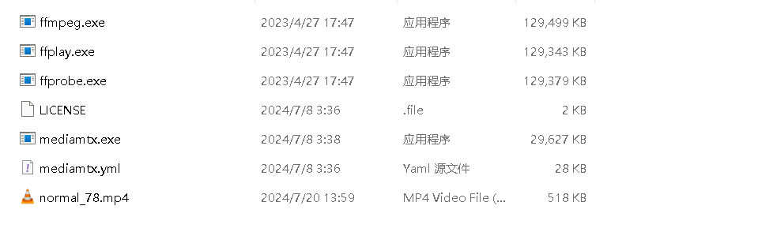
ffmpeg对本地视频进行rtsp推流
启动rtsp
双击点开mediamtx.exe，得到如下图画面：
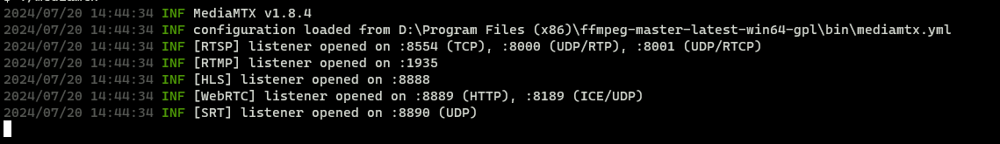
ffpmeg推流本地视频
打开cmd终端(win+r，输入cmd, 回车)，进入到ffmpeg.exe所在路径，使用以下命令：
|
|
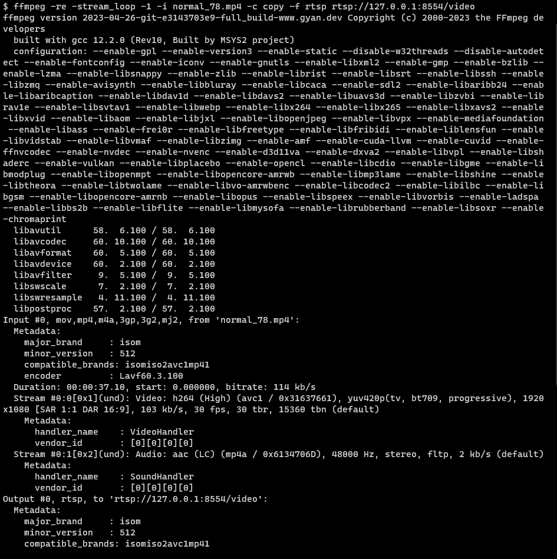
注意：这里ip为本地环境IP，可以在cmd终端输入ipconfig查看。
ffpmeg常用参数
| -re | 以流的方式读取 |
|---|---|
| -i | 输入视频 |
| -f | 格式化输出到哪里 |
| -stream_loop | 循环读取视频源的次数，-l为无线循环 |
| -c | 指定编码器 |
| -c copy | 直接复制，不经过重新编码（较快） |
| -c:v | 指定视频编码器 |
| -c:a | 指定音频编码器 |
| -vn | 去除视频流 |
| -an | 去除音频流 |
使用vlc验证是否推流成功
- 下载vlc软件并安装:
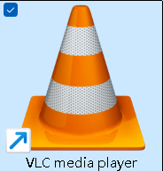
- 打开vlc，点击媒体->打开网络串流->输入网路url：rtsp://127.0.0.1:8554/video
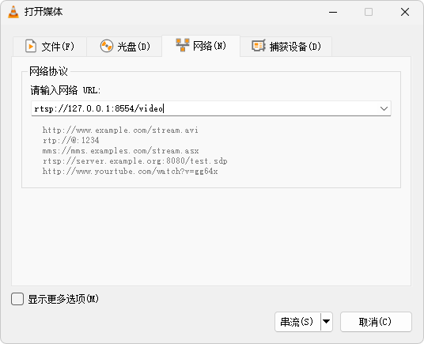
如果能正常播放视频，证明推流成功，服务端或者边缘端可以使用ur进行rtsp来推流。
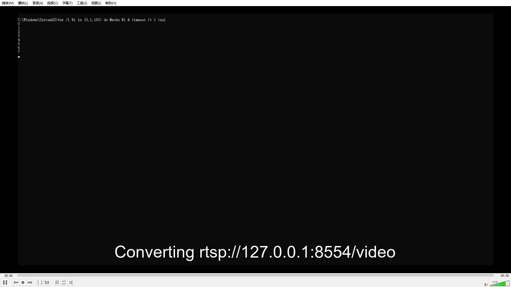
在Windows操作系统上使用mediamtx和ffmpeg推送录屏视频流
搭建启动rtsp server
推送录屏视频流
下载FFmpeg
从https://github.com/BtbN/FFmpeg-Builds/releases/latest下载Windows版本的编译结果。
解压后，通过cmd进入FFmpeg所在的目录，执行下面的命令（其中rtsp://localhost:8554/mystream是上一步生成的地址）。
|
|
我们可以看到console会出现下面的变化。
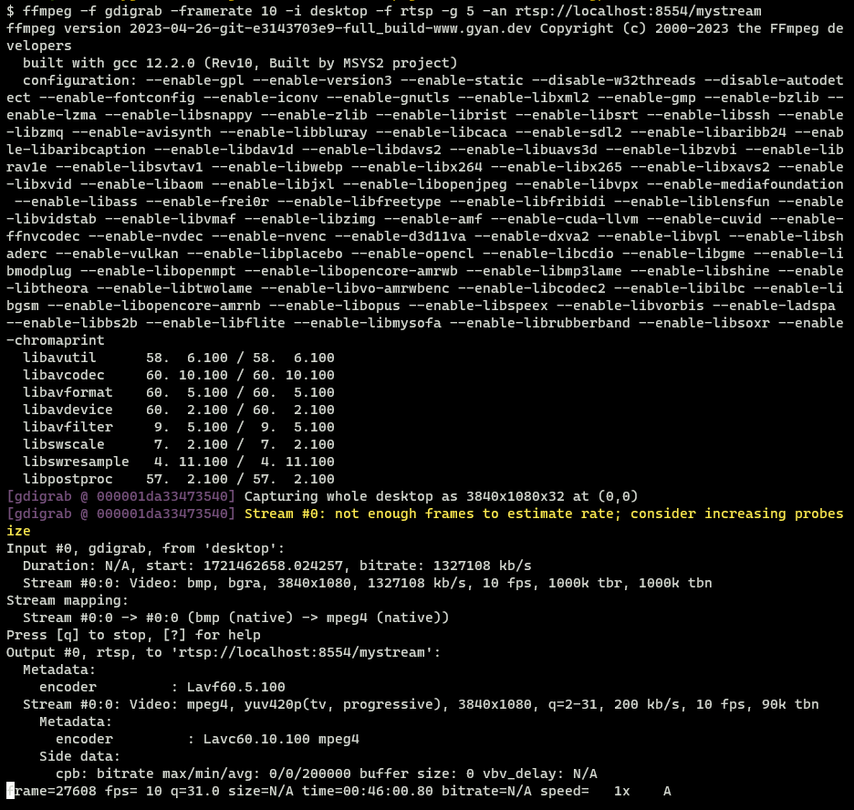
rstp simple server的窗口会发生下面的变化。
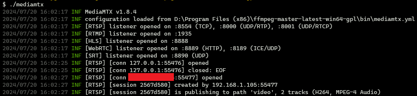
检验
获取本机IP
在cmd中使用ipconfig获取本机IP
检测
可以使用VLC播放器测试流地址是否有效。
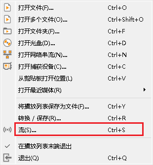
填入rtsp://127.0.0.1:8554/mystream。注意此处不能再使用localhost了，而是要用本机的IP。
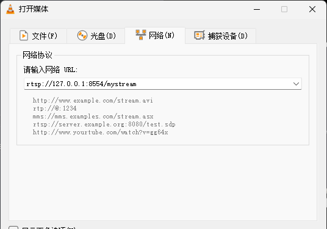
在VCL中能看到屏幕就代表我们方案是通过的。
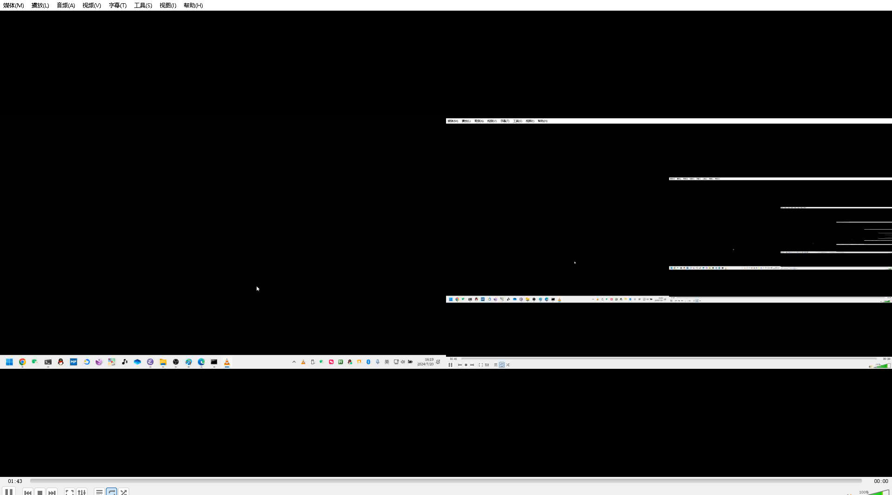
RTSP 和 RTMP原理 & 通过ffmpeg实现将本地摄像头推流到RTSP服务器
流媒体：RTSP 和 RTMP
RTSP 和 RTMP的工作原理
RTSP工作原理
- 用户设备向视频流平台发送 RTSP 请求
- 视频流平台返回可以操作的请求列表，比如播放、暂停等
- 用户设备向视频流平台发送具体的请求，比如播放
- 视频流平台解析请求并调用指定机制启动视频流处理
- 由于 RTSP 依赖于专用服务器，并且依赖于 RTP（底层用到了UDP），因此该协议不支持加密视频内容或重传丢失的数据包。
这里解释一下RTSP中是如何用到UDP和TCP的：
- RTP协议，英文全称：Real-time Transport Protocol，中文就是实时传输协议，它的底层其实就是UDP，这样一来就可以实现低延迟。
-
除了RTP协议，为确保流畅和一致的流传输，RTSP 还使用另外两种网络通信协议：
- TCP 收发控制命令（例如播放或停止请求）：TCP可靠传输，比如用户按下播放或者停止播放的时候，这个是个准确的请求，这个需要保证可靠性，这个时候TCP作用就体现了。
- UDP传送音频、视频和数据：UDP是低延迟的协议，那么用于传送音频、视频和数据可以达到非常高效的效果。
这里可以通过开源的rtsp服务器可以简单理解：TCP监听端口为8554，UDP监听端口为8000
RTMP工作原理
- 摄像头捕获视频
- 通过编码器将视频流传输到视频平台服务器
- 视频平台处理视频流
- 通过CDN分发到离用户最近的服务器上
- 最后视频流就能成功的到达用户设备
在视频从摄像头到服务器的过程中，RTMP将大量数据分割成小块并跨多个虚拟通道传输（内容分发网络CDN），在视频源和 RTMP 服务器之间提供了稳定和流畅的视频流。
RTSP 和 RTMP的优缺点
RTSP的优缺点
RTSP的优点：
- 轻松自定义流：可以通过结合不同的协议来开发自己的视频流解决方案。
- 分段流式传输：RTSP 流使观看者能够在下载完成之前访问的视频内容，而不必下载完整的视频以流式传输内容。
RTSP的缺点：
- 与 HTTP不兼容：没有简单的解决方案可以在 Web 浏览器中播放 RTSP流，因为 RTSP 旨在通过私有网络流式传输视频，必须借用额外软件。
- 使用率低：由于视频播放器和流媒体服务并未广泛支持 RTSP 流媒体，因为使用率比较低。
RTMP的优缺点
RTMP的优点：
- 低延迟：RTMP使用独占的 1935 端口，无需缓冲，可以实现低延迟。
- 适应性强：所有 RTMP 服务器都可以录制直播媒体流，同时还允许观众跳过部分广播并在直播开始后加入直播流。
- 灵活性：RTMP 支持整合文本、视频和音频，支持 MP3 和 AAC 音频流，也支持MP4、FLV 和 F4V 视频。
RTMP的缺点：
- HTML5 不支持：标准HTML5 播放器不支持 RTMP 流。
- 容易受到带宽问题的影响：RTMP 流经常会出现低带宽问题，造成视频中断。
- HTTP 不兼容：无法通过 HTTP 流式传输 RTMP，必须需要实现一个特殊的服务器，并使用第三方内容交付网络或使用流媒体视频平台。
RTSP和RTMP的比较
RTMP 和 RTSP协议 都是流媒体协议：
- RTMP（Real Time Message Protocol 实时消息传递协议） 有 Adobe 公司提出，用来解决多媒体数据传输流的多路复用（Multiplexing）和分包（packetizing）的问题，优势在于低延迟，稳定性高，支持所有摄像头格式，浏览器加载 flash插件就可以直接播放。
- RTSP （Real-Time Stream Protocol 实时流协议）由Real Networks 和 Netscape共同提出的，基于文本的多媒体播放控制协议。RTSP定义流格式，流数据经由RTP传输；RTSP实时效果非常好，适合视频聊天，视频监控等方向。
RTMP 和 RTSP协议 的区别：
RTSP虽然实时性最好，但是实现复杂，适合视频聊天和视频监控；
RTMP强在浏览器支持好，加载flash插件后就能直接播放，所以非常火，相反在浏览器里播放rtsp就很困难了。
RTSP和RTMP如何选择
- IP 摄像机选择RTSP：几乎所有 IP 摄像机都支持 RTSP，这是因为 IP 摄像机早在 RTMP 协议创建之前就已经存在，与 RTSP 和 IP 摄像机结合使用时，IP 摄像机本身充当 RTSP 服务器，这意味着要将摄像机连接到 IP 摄像机服务器并广播视频。
- 物联网设备选择RTSP：RTSP 通常内置在无人机或物联网软件中，从而可以访问视频源，它的好处之一是低延迟，确保视频中没有延迟，这对于无人机来说至关重要。
- 流媒体应用程序选择RTMP：比如各种短视频软件、视频直播软件等都内置了RTMP，RTMP 是为满足现代流媒体需求而设计的。
如何在浏览器上播放RTSP
- 直播的协议有：rtmp, http, rtsp等等。最常用的有二种：http, rtmp，当使用http协议的时候视频格式需要是m3u8或flv，下面作详细说明各种环境的优缺点。首先，rtsp不能使用于网页环境（包含PC端和移动端），那么直播只能选择rtmp或http。
- rtmp协议只支持flashplayer，也就是只能在PC端（或安卓环境中安装了flashplayer组件，这种环境比较少）安装了flashplayer的情况下使用。按现在的趋势，flashplayer是要逐渐被淘汰掉的。当然，在中国还会存在相对长时间。
- http协议的直播分二种格式，m3u8和flv。flv是一种即将被淘汰的直播格式。用来做直播已显的力不从心了。所以综合考虑，m3u8相对的比较好点，优点是支持移动端，并且支持PC端上安装了flashplayer的环境。缺点就如同rtmp一样。flashplayer并不是未来的发展趋势。另外一个缺点就是m3u8是有延迟的。并不能实时，实时传输方面不如rtmp协议。因为 m3u8的直播原理是将直播源不停的压缩成指定时长的ts文件（比如9秒，10秒一个ts文件）并同时实时更新m3u8文件里的列表以达到直播的效果。这样就会有一个至少9,10秒的时间延迟。如果压缩的过小，可能导致客户端网络原因致视频变卡。
- 实现rtsp转http并使用m3u8格式进行直播 可以参考RTSP Webcam to HLS Live Streaming using FFMPEG and XAMPP | PART 1
具体过程：外接支持rtsp的webcam；使用ffplay命令来播放rtsp流，可以根据参数将实时视频写入到指定文件夹中（分段写入）；xampp开启apache（开启80端口），可以让页面通过保存的m3u8文件实时访问webcam的监控界面。
ffmpeg将本地摄像头推流到RTSP服务器
ffmpeg参考资料
FFmpeg Protocols Documentation
ffmpeg将本地摄像头推流到RTSP服务器
ffmpeg–使用命令+EasyDarwin推流笔记本摄像头
windows环境下python使用ffmpeg rtsp推流
RTSP Webcam to HLS Live Streaming using FFMPEG and XAMPP | PART 1
Note：ffmpeg将本地摄像头推流到rtsp的8554端口上（rtsp-simple-server在处理rtsp时，监听的是8554端口，指定其他端口ffmpeg推流会失败)
安装ffmpeg和rtsp-simple-server
大致实现过程：使用rtsp-simple-server作为中转服务器，用于ffmpeg（写客户端）推流，后台服务（读客户端）拉流
windows安装rtsp-simple-server和ffmpeg
参考windows环境下，搭建RTSP视频推流服务器即可（记得修改rtsp-simple-server.yml配置文件中的ip地址）
linux安装rtsp-simple-server和ffmpeg
安装rtsp-simple-server_v0.20.2_linux_amd64.tar.gz（这里以x86 CPU为例），解压后修改rtsp-simple-server.yml配置文件中的ip地址（vim替换命令为%s:/127.0.0.1/192.168.132.100/g），执行./rtsp-simple-server即可启动rtsp服务器。
如果要想在后台启动rtsp服务器，执行如下命令
|
|
tail rtsp_server.log #查看rtsp-simple-server启动日志文件
|
|
ffmpeg安装地址如下https://johnvansickle.com/ffmpeg/，解压后执行./ffmpeg即可使用ffmpeg，参考在linux下使用ffmpeg方法
Note：在linux中关于tar.gz，xz，tar的解压操作请自行上网查阅。
将本地摄像头推流到RTSP服务器
大致实现过程：使用rtsp-simple-server作为中转服务器，用于ffmpeg（写客户端）推流，后台服务（读客户端）拉流
这里以windows系统作为演示，先解压rtsp-simple-server_v0.19.1_windows_amd64.zip，打开rtsp-simple-server.exe监听RTSP下TCP的8554端口，然后通过ffmpeg将指定摄像头采集到的图像帧向该端口进行推流（即多个客户端与服务器端的socket通信）
写客户端：ffmpeg
ffmpeg推流视频文件到指定ip + 端口上（-stream_loop -1）：
|
|
ffmpeg将本地摄像头的视频流推送到指定ip + 端口上，则需要
|
|
服务器端：RTSP服务器
初启动效果如下：
开启两个ffmpeg模拟两个写客户端，完成摄像头采集视频帧的推流和本地视频文件的推流
该过程会出现两个createby和publishing，在不同文件路径下写入图像帧，可以通过指定进程（ip+端口）来处理（这里新创建了56725和56732两个进程来处理），而RTSP的监听端口仍然是8554，这样可以实现非阻塞通信。
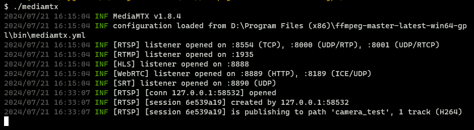
读客户端：读客户端可以通过两种方式来实现
安装VLC，选择流数据播放模式，输入rtsp://127.0.0.1:8554/camera_test，rtsp://127.0.0.1:8554/videoFile_test即可播放；
通过OBS的虚拟摄像头，将终端打印信息接入到虚拟摄像头中，再通过ffmpeg将虚拟摄像头中的内容推流出来，最后通过VLC拉流查看效果
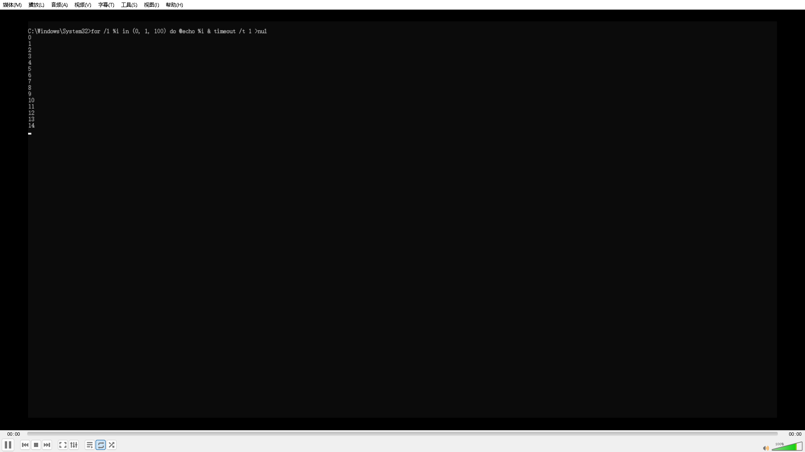
亦或者使用如下python代码：
|
|
此时会出现两个createby和reading，即开启两个进程进行视频流的读取
存在问题：视频读取时延大
基于tcp和RTP的rtsp直播延迟很高，一开始延迟只有7s，由于TCP的拥塞控制，导致随着时间推移，延迟越来越高，有14s之多。
可能原因1：视频编码导致延迟高（亲测效果不明显）
参考ffmpeg直播解决延时的关键方法，主要原因是使用libx264或者h264对视频进行编码的问题。
解决方法参考ffmpeg–使用命令+EasyDarwin推流笔记本摄像头
//h264_qsv编码（比libx264编码快点）
|
|
//不使用编码器，直接推送（但是很模糊）
|
|
可能原因2：设置ffmpeg参数（亲测效果不明显）
参考解决ffmpeg的播放摄像头的延时优化问题(项目案例使用有效)
原参数：
|
|
优化参数1：
-tune zerolatency /设置零延时 -preset ultrafast /–preset的参数主要调节编码速度和质量的平衡，有ultrafast（转码速度最快，视频往往也最模糊）、superfast、veryfast、faster、fast、medium、slow、slower、veryslow、placebo这10个选项，从快到慢
优化参数2：
|
|
ffmpeg完整命令如下：
|
|
可能原因3：tcp连接导致延迟高
参考RTSP end to end latency will be increasing when use tcp #902
ffmpeg在通过rtsp实现推流时默认是遵循tcp协议的，目的是为了保证消息可靠传输。对于实时音视频通信，如果要想实现低延迟，要么增加带宽，要么使用UDP进行传输。
原因4：逐帧读取时需要逐帧解码，导致输入和输出速率不匹配导致延迟高（有效 - 抽帧读取）
解决方法：对于读客户端，采用抽帧读取的方法来解决。如果采用逐帧读取并完成解码的方式，会让写客户端不停地推流，而读客户端来不及解码导致缓存区拥塞。
参考Opencv—视频跳帧处理，OpenCV笔记：cv2.VideoCapture 完成视频的跳帧输出操作
ffmpeg写客户端命令无需修改：
//获取本地摄像头名称
|
|
|
|
python读客户端代码修改如下：
|
|